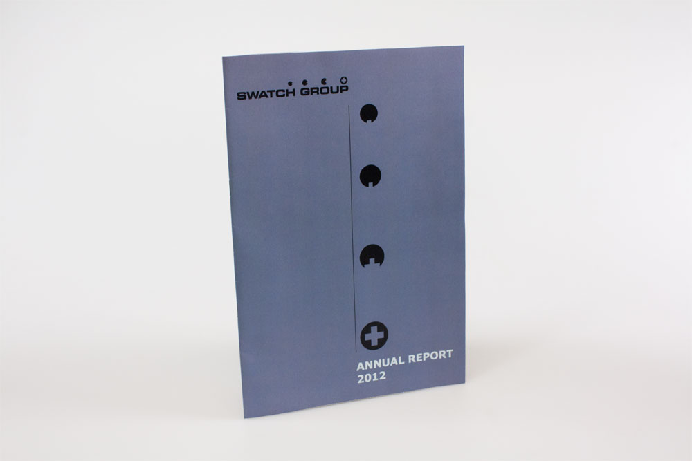

Nicholas Wolfaardt
Annual General Report
Designed and output an annual general report proposal for a publicly listed company of my choice. I had to state the purpose of of my annual general report, who the target audience is and what message I wished to convey. I had to have at least 12 pages. Page numbering and the use of master pages were required. The annual general report to be designed needed to include the following: front and back cover, a contents page/spread, at least 4 text oriented pages, at least 2 graphic oriented pages and at least 1 financial double page spread that includes at least 1 table and 3 graphs. The annual general report had to be full colour process(CMYK). The final size of my annual general report was my choice. I had to use imagery, typography, colour and supporting design elements that would help convey the message and appeal to my chosen target audience. All content in my annual general report had to be morally and ethically ecceptable.